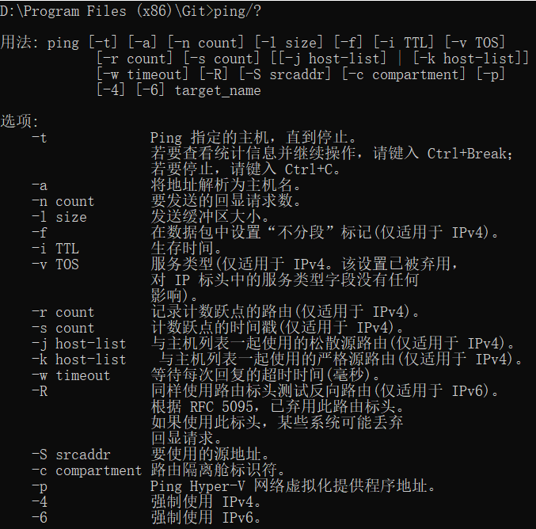

验证性实验
ipconfig
实作一
使用 ipconfig/all 查看自己计算机的网络配置，尽可能明白每行的意思，特别注意 IP 地址、子网掩码 Subnet Mask、网关 Gateway。

实作二
使用 ipconfig/all 查看旁边计算机的网络配置，看看有什么异同。

子网掩码和IP以及网关都不同
问题
你的计算机和旁边的计算机是否处于同一子网，为什么？
不是，因为我连接的是手机热点，它用的是校园网，且通过上图子网掩码不同，且与IP相与后结果也不同，因此不处于同一子网
ping
实作一
要测试到某计算机如 重庆交通大学 Web 服务器的连通性，可以使用 ping www.cqjtu.edu.cn 命令，也可直接使用 IP 地址。
请掌握使用该命令后屏幕显示的反馈回来信息的意思，如：TTL、时间等。

TTL：指生存时间，简单来说，它表示了数据包在网络中的时间，经过一个路由器后TTL就减一，这样TTL最终会减为0，当TTL为0时，则将数据包丢弃，这样也就是因为两个路由之间可能形成环，如果没有TTL的限制，则数据包将会在这个环上一直死转，由于有了TTL，最终TTL为0后，则将数据包丢弃
时间：这是指得到对方回应的时间
实作二
使用 ping/? 命令了解该命令的各种选项并实际使用。

问题
假设你不能 ping 通某计算机或 IP，但你确定该计算机和你之间的网络是连通的，那么可能的原因是什么？该如何处理能保证 ping 通？
当你的网络出现故障不能访问某计算机如 14.215.177.39 (百度的 IP 地址之一 ) 时，我们一般可采用由近及远的连通性测试来确定问题所在。现假设你的 IP 是 192.168.1.89，你旁边计算机的 IP 是 192.168.1.64，网关的 IP 是 192.168.1.1 ，那么过程如下：
- ping 127.0.0.1 ，测试自己计算机的状态，如果 OK，那么说明本机网络软件硬件工作正常，否则，问题在本机，检查本机 TCP/IP 配置即网卡状态等
- ping 192.168.1.64 ，测试到旁边计算机的连通性，如果OK，那么说明本子网内部工作正常，否则，问题在本机网络出口到交换机之间，检查本机网卡到交换机的连线等
- ping 192.168.1.1，测试到网关的连通性，如果 OK，那么说明本子网出口工作正常，否则，问题在网关，这是你无能为力的事情，报告给网管
- ping 14.215.177.39，测试到百度的连通性，如果 OK，那就 OK，否则，问题在网关以外
问题
假设在秘籍中进行的网络排查中，ping 百度的 IP 即 ping 14.215.177.39 没问题，但 ping 百度的域名即 ping www.baidu.com 不行，那么可能的原因是什么？如何进行验证和解决？
另外，经常有同学问到的："能上 QQ，但不能上网" 跟这个问题的原因是相似的。
能ping IP说明链路是通的，通不过域名说明是域名解析出现了问题，可使用nslookup+域名看下是哪个域名服务器，很多时候都是自动获取DNS服务器，但是有些时候，使用默认的DNS服务器是ping不通域名，此时可以将DNS配置成固定的，可以是Google的DNS8.8.8.8或电信的101.226.4.6
tracert
实作一
要了解到某计算机如 www.baidu.com 中间经过了哪些节点（路由器）及其它状态，可使用 tracert www.baidu.com 命令，查看反馈的信息，了解节点的个数。
可通过网站 http://ip.cn 查看这些节点位于何处，是哪个公司的，大致清楚本机到百度服务器之间的路径。

问题一
tracert 能告诉我们路径上的节点以及大致的延迟等信息，那么它背后的原理是什么？本问题可结合第二部分的 Wireshark 实验进行验证。
通过向目标发送不同IP生存时间 (TTL) 值的“Internet控制消息协议(ICMP)”回应数据包，Tracert诊断程序确定到目标所采取的路由。要求路径上的每个路由器在转发数据包之前至少将数据包上的 TTL 递减1。数据包上的 TTL 减为 0 时，路由器应该将“ICMP 已超时”的消息发回源系统。 Tracert 先发送 TTL 为 1的回应数据包，并在随后的每次发送过程将TTL递增 1，直到目标响应或 TTL 达到最大值，从而确定路由。通过检查中间路由器发回的“ICMP已超时”的消息确定路由。某些路由器不经询问直接丢弃 TTL 过期的数据包，这在 Tracert 实用程序中看不到。
问题二
在以上两个实作中，如果你留意路径中的节点，你会发现无论是访问百度还是棋歌教学网，路径中的第一跳都是相同的，甚至你应该发现似乎前几个节点都是相同的，你的解释是什么？
因为我们的网络都是从本身的计算机所在的子网出发
问题三
在追踪过程中，你可能会看到路径中某些节点显示为 * 号，这是发生了什么
安全考虑或网络问题而没有回应
ARP
实作一
运行 arp -a 命令查看当前的 arp 缓存， 请留意缓存了些什么。
然后 ping 一下你旁边的计算机 IP（注意，需保证该计算机的 IP 没有出现在 arp 缓存中，或者使用 arp -d * 先删除全部缓存），再次查看缓存，你会发现一些改变，请作出解释。

缓存了与两个接口通信的Internet地址、物理地址及类型
实作二
请使用 arp /? 命令了解该命令的各种选项。

实作三
一般而言，arp 缓存里常常会有网关的缓存，并且是动态类型的。
假设当前网关的 IP 地址是 192.168.0.1，MAC 地址是 5c-d9-98-f1-89-64，请使用 arp -s 192.168.0.1 5c-d9-98-f1-89-64 命令设置其为静态类型的。

这一步考虑到对电脑安全问题，就不继续进行了
问题一
你可能会在实作三的操作中得到 "ARP 项添加失败: 请求的操作需要提升" 这样的信息，表示命令没能执行成功，你该如何解决？
①以管理员身份运行cmd，netsh i i show in
②然后执行netsh -c i i add neighbors 11 192.168.0.1 5c-d9-98-f1-89-64
③此时通过 arp -a命令查看，修改成功
问题二
在实作三中，为何缓存中常常有网关的信息？
我们将网关或其它计算机的 arp 信息设置为静态有什么优缺点？
缓存记录着你有访问过的pc、网卡、MAC物理地址。
设置为静态可以防止ARP病毒的传播，但在移动或者经常变化的网络环境中，这种手工维护MAC表的方式不适用。
DHCP
实作一
一般地，我们自动获取的网络配置信息包括：IP 地址、子网掩码、网关 IP 以及 DNS 服务器 IP 等。使用 ipconfig/release 命令释放自动获取的网络配置，并用 ipconfig/renew 命令重新获取，了解 DHCP 工作过程和原理。


问题一
如果你没能成功的释放，请思考有哪些可能的原因并着手进行解决？
1 可能是它断开媒体连接，要将媒体连接
2 没有加适配器，网卡或驱动
问题二
在Windows系统下，如果由于某种原因计算机不能获取 DHCP 服务器的配置数据，那么Windows将会根据某种算法自动配置为 169.254.x.x 这样的 IP 地址。显然，这样的 IP 以及相关的配置信息是不能让我们真正接入 Internet 的，为什么？既然不能接入 Internet，那么Winodws系统采用这样的方案有什么意义？
自动配置的IP地址和信息只是短暂性的解决计算机不能获取 DHCP 服务器的配置数据的问题，要真正的接入Internet还是得本身计算机的正确IP地址。
netstat
实作一
Windows 系统将一些常用的端口与服务记录在 C:\WINDOWS\system32\drivers\etc\services 文件中，请查看该文件了解常用的端口号分配。

实作二
使用 netstat -an 命令，查看计算机当前的网络连接状况。更多的 netstat 命令选项，可参考上面链接 4 和 5 。

DNS
实作一
Windows 系统将一些固定的/静态的 DNS 信息记录在 C:\WINDOWS\system32\drivers\etc\hosts 文件中，如我们常用的 localhost 就对应 127.0.0.1 。请查看该文件看看有什么记录在该文件中。
实作二
解析过的 DNS 记录将会被缓存，以利于加快解析速度。请使用 ipconfig /displaydns 命令查看。我们也可以使用 ipconfig /flushdns 命令来清除所有的 DNS 缓存。

实作三
使用 nslookup qige.io 命令，将使用默认的 DNS 服务器查询该域名。当然你也可以指定使用 CloudFlare（1.1.1.1）或 Google（8.8.8.8） 的全球 DNS 服务器来解析，如：nslookup qige.io 8.8.8.8，当然，由于你懂的原因，这不一定会得到正确的答案。

cache
实作一
打开 Chrome 或 Firefox 浏览器，访问 https://qige.io ，接下来敲 F12 键 或 Ctrl + Shift + I 组合键打开开发者工具，选择 Network 面板后刷新页面，你会在开发者工具底部看到加载该页面花费的时间。请进一步查看哪些文件被 cache了，哪些没有。

实作二
接下来仍在 Network 面板，选择 Disable cache 选项框，表明当前不使用 cache，页面数据全部来自于 Internet，刷新页面，再次在开发者工具底部查看加载该页面花费的时间。你可比对与有 cache 时的加载速度差异。

利用缓存可以大大加快速度，这就是平时为啥再次进同一个网页要快些的原因。